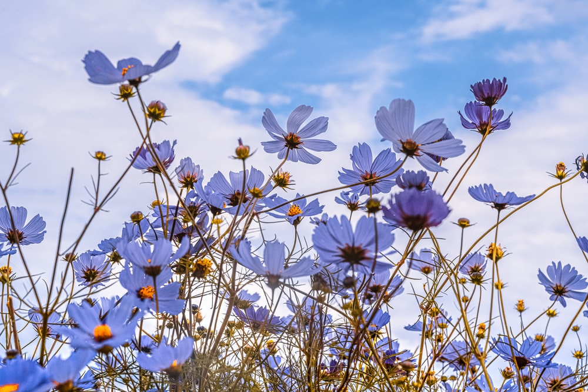

Journal
back to homepage
Date: 01/31/2023
Old Schoolin' it
Whenever I think of "old thymey" images of websites, for some reason, Norton Commander is the first thing that comes to mind. I remember seeing my dad using this file manager when I was little. And it looks so cool and confusing at the same time. There were so many columns of text, and that blue background made it look even more overwhelming.
Another example I can think of is the website of Rozetka, the biggest online marketplace in Ukraine. E-commerce in Ukraine started developing only in the mid-2000s, so the website looked quite simple at that time. I think we bought our first laptop on Rozetka, and my parents spent hours browsing this website :)
Date: 01/26/2023
Project 1 Idea: Beneficial Insects
I want to make a website for the company selling beneficial bugs. I've worked on a rebranding for this company, and I would like to apply the brand guidelines to this project. I draw inspiration from the scientific illustrations of the insects and a warm and friendly color palette.There are no specific websites I am modeling after. However, I would like to make something similar to the visual storytelling websites, where each page tell a story in different ways as you scroll down.
Visual inspiration:
link to the website
I really like the combination of this illutration style and the bright color palette. The animated eliments make the page to feel more lively

Date: 01/16/2023
Inspiring site: The Haircut the visual essay by Frances To
Link to the website
I really like how engaging and entertaining, and immersive this website is. Smooth scroll animations and symbolic imagery make the narrative of the story so much more enjoyable. In addition, I like how each part of the story is presented in a different yet cohesive way.


Date: 01/09/2023
Here's my first post
